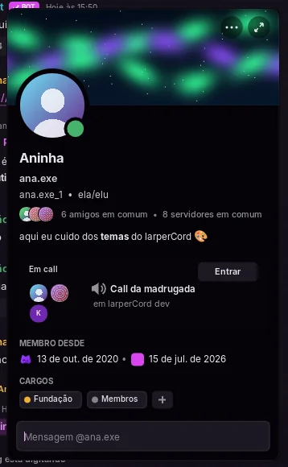
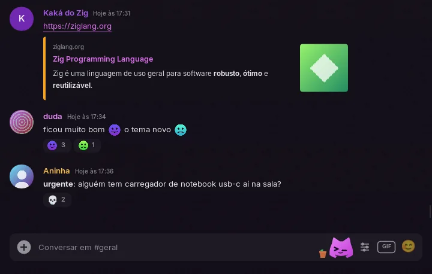

Tour dos recursos
Tudo aqui funciona no modo demonstração, exceto onde precisa da rede de verdade. Para o que falta ou está parcial, veja Estado e roadmap.
Conversas
- Mensagens: enviar, editar (
↑na caixa vazia edita a última), excluir, e mensagens pendentes confirmadas pelo servidor. As mensagens são agrupadas, com separadores de dia. - Respostas, com a curvinha e um clique que pula até a original. O "@ LIGADO / @ DESLIGADO" da barra da resposta escolhe se o autor recebe a menção, e a resposta a uma mensagem sem texto mostra o que ela tinha (um arquivo, uma figurinha, uma mensagem de voz, uma enquete).
- Opções de envio ao lado do botão de GIF: mensagem silenciosa (ou
@silentno começo), sem prévia de links ou sem mencionar ninguém. Cada arquivo da bandeja de envio pode virar spoiler e ter texto alternativo. - Reações, um seletor de emoji e uma barra de ações ao passar o mouse em cada mensagem. Botão direito numa reação, ou Ver reações, mostra quem reagiu.
- Enquetes: vote, tire o voto ou veja o resultado antes, e clique numa resposta para ver quem votou nela.
- Seleção de texto entre várias mensagens com o mouse, depois
Ctrl+C. - Caixa de texto com várias linhas: quebra o texto longo e cresce até 10 linhas.
Enterenvia eShift+Enterabre uma linha nova. Árabe e hebraico digitados aparecem na ordem certa e alinhados à direita, como nas mensagens enviadas, e o cursor, o clique, a seleção, oBackspace, o←e o→seguem o texto na tela. - Rascunhos por canal: o texto não enviado volta quando você retorna ao canal, mesmo depois de fechar o app.
- Histórico carregado conforme você rola para cima, sem a tela pular, numa lista virtualizada.
- Mensagens de sistema: entradas, calls, fixadas, boosts.
- Registro de mensagens (opcional): as mensagens apagadas continuam na tela, marcadas, e as edições guardam o original. Só local.
Threads e fóruns
- Threads ficam abaixo do canal pai, recolhíveis e com contagem de não lidas. Abrem como qualquer conversa, com abas, tela dividida, rascunho, cache e busca.
- A mensagem que abriu a thread mostra um cartão com o número de mensagens e a última atividade. Criar, entrar, sair e ver as arquivadas ficam no menu.
- Editar thread…, no menu dela ou clicando no título, muda o nome, as tags de um post de fórum e o auto-arquivar; arquivar e trancar são um clique. Só aparece o que você pode fazer. O painel de threads tem a aba Privadas, com as threads privadas arquivadas.
- Fóruns e canais de mídia mostram a lista de posts no lugar da conversa, com busca local, ordem por atividade, mais páginas sob demanda e Novo post com título, tags e texto.
- As permissões vêm do canal pai, e a lista de membros mostra quem está na thread.


Emoji e autocompletar
- Emoji personalizado aparece como imagem, animado inclusive, grande quando a mensagem é só emoji, e nas reações. Figurinhas PNG, APNG e GIF viram imagem, e a aba Figurinhas do seletor de GIFs envia.
- O seletor tem a lista Unicode inteira, busca em português e inglês, recentes e os emojis dos seus servidores, e avisa quando um emoji precisa de Nitro.
- Autocompletar: na caixa de texto,
@,#,:abe/abrem uma lista (o/lista os comandos de barra dos bots do servidor e dos seus apps). Use as setas e depoisTabouEnter,Escou um clique. Nomes com espaço viram menção de verdade ao enviar. - O modo economia mostra o emoji personalizado como
:nome:e não baixa nada.


Leitura e fixadas
- Leitura sincronizada com o Discord: não lidos e menções certos ao abrir o app, e ler em outro aparelho limpa aqui. As confirmações de leitura funcionam como as do cliente oficial, no máximo uma por canal a cada 3 segundos, e nenhuma sozinha com a janela sem foco.
- Marcar como lido por canal e por servidor, e marcar como não lida a partir de qualquer mensagem.
- A linha de novas mensagens vem com um botão que pula para a primeira. O canal abre na primeira não lida, o que dá para desligar em Configurações → Chat.
- Mensagens fixadas: o alfinete no cabeçalho, e fixar ou desafixar pelo menu. Ir para qualquer mensagem antiga carrega o histórico em volta dela, com Voltar ao presente para retornar. O painel de fixadas carrega mais de 50 com Carregar mais.
- Links do Discord abrem no app, inclusive os de
ptb.ecanary.. Convites viram um cartão com o servidor e os membros e um botão Entrar. Entrar avisa antes que entrar ou sair de muitos servidores rápido é o motivo mais comum para contas em clientes de terceiros serem bloqueadas. - Clicar em
@alguémabre o perfil, clicar em#canalabre o canal, e o horário mostra a data completa ao passar o mouse.

Markdown
Negrito, itálico, riscado, código, spoilers, menções <@id> e <#id>, links e emoji colorido. Os blocos de código ganham realce nas cores do tema a partir da etiqueta do bloco (zig, c/cpp, js/ts, py, rust, go, sh, json, lua, java/kotlin, c#, diff) e um botão Copiar. Opcionalmente, uma prévia ao vivo fica acima da caixa de texto enquanto você digita.
Também: títulos com #, ## e ###, texto pequeno com -#, citações com > e >>>, listas e links [texto](url), que mostram o endereço real ao passar o mouse. Blocos de código com mais de uma linha têm número de linha (que fica fora do que você copia). Enquanto você digita um bloco, um servidor de linguagem à sua escolha pode apontar erros.
Bots e cartões
Bots e webhooks levam a etiqueta BOT ao lado do nome, com um ✓ nos bots verificados. Cada mensagem de webhook fica com o nome e a foto com que foi enviada, e o cartão dele não tem a caixa "Mensagem", porque webhook não é uma conta.
Embeds e as mensagens com componentes novos do Discord mostram texto, miniaturas, separadores, galerias, arquivos e botões de link. O texto deles pode ser selecionado e copiado com Ctrl+C. Encaminhadas aparecem como cartões.
Botões e menus de seleção falam com o bot, com um indicador de carregando e "Esta interação falhou" quando ele não responde. Os formulários dos bots (modais) abrem no app, e digitar / abre um painel para os subcomandos, as opções e os arquivos de um comando de barra. Respostas que só você vê avisam isso e podem ser dispensadas. Comandos de apps no botão direito e arquivos dentro dos formulários de bots ainda não têm suporte.
Mídia
- Imagens e GIFs, com cache de tamanho fixo, visualização em tela cheia e envio pelo seletor, arrastando e soltando ou com
Ctrl+V. WebP e APNG animado também são decodificados. GIFs longos tocam todos os quadros, e a estrela num GIF põe nos seus favoritos. - Spoilers e mídias sensíveis ficam atrás de uma capa até você clicar, sem baixar nada antes. Imagens com o link do Discord vencido são renovadas sozinhas.
- Mensagens de voz têm um player com a onda para pular. Gravar ainda não tem suporte.
- Embeds como cartões: cor, autor, título, descrição em markdown, campos, imagem, miniatura e rodapé.
- Vídeo na conversa para anexos e links diretos
.mp4/.webm, pelo FFmpeg 7, 8 ou 9, que só é carregado no primeiro play. No Linux é o FFmpeg do sistema (distros antigas trazem um mais velho, que é ignorado). No Windows, Configurações → Chat → Baixar FFmpeg baixa e instala (cerca de 80 MB, conferidos por SHA-256), ou o app usa as DLLs do FFmpeg que achar ao lado dolarpercord.exeou em qualquer pasta doPATH. Nos dois sistemas, Escolher a pasta do FFmpeg… no mesmo lugar aceita uma versão "shared" do FFmpeg que você já tem, e sem o FFmpeg a página diz o porquê: umffmpegestático noPATH, sem as bibliotecas (é o que o winget, o choco e o gyan.dev instalam), uma versão que o app não usa ou uma biblioteca que não carregou, com o motivo dado pelo sistema. Play e pausa, barra de progresso e som, até 854×480 a cerca de 30 qps. O vídeo fora da tela pausa, e 30 segundos depois tudo é liberado. Sem o FFmpeg, ele abre no navegador. - Modo economia: imagens, fotos de perfil e anexos só baixam quando você clica.
Achando as coisas
- Paleta de comandos (
Ctrl+K, ouCtrl+Shift+Ppara ações primeiro): busca aproximada em canais, DMs, servidores, temas, status, páginas de configurações e todas as opções liga/desliga. - Busca (
Ctrl+F): roda na memória e no cache local a cada tecla, sem internet. Os resultados pulam até a mensagem.
| Filtro | Encontra |
|---|---|
from:nome | mensagens dessa pessoa |
in:canal | mensagens nesse canal |
has:link | mensagens com um link |
has:imagem | mensagens com uma imagem (has:image também funciona) |
has:arquivo | mensagens com um arquivo (has:file também funciona) |
"frase exata" | essa frase |
A busca ignora maiúsculas e acentos, então nao encontra não.
- Caixa de entrada (
Ctrl+I): DMs e menções não lidas de todos os servidores, agrupadas por canal, com prévia, ir até a mensagem e "Marcar tudo como lido". Uma segunda aba mostra as menções recentes do Discord. - Mensagens salvas (
Ctrl+Shift+S, ou botão direito → Salvar mensagem): até 500, com uma anotação de até 1.000 caracteres. Ficam só no seu computador, e nada vai para o Discord.
Layout
- Abas para os canais abertos.
Ctrl+Cliqueabre um em nova aba, e o clique do meio fecha. - Tela dividida: "Abrir ao lado" no menu de um canal coloca até 3 conversas lado a lado, cada uma com o próprio histórico e posição de rolagem. A caixa de texto e o cabeçalho seguem o painel em foco.
- Painéis ajustáveis: arraste a borda da lista de canais, da lista de membros ou dos painéis da tela dividida. Duplo clique volta à largura do tema. A escolha fica salva, vale nos outros temas e cede quando a janela fica pequena demais para a conversa; Configurações → Aparência restaura tudo.
- Esconder a lista de membros ou a barra de status em Configurações → Aparência, e a conversa ocupa o espaço.
- Pastas de servidores das suas configurações do Discord, atualizadas ao vivo.
- A lista de DMs deixa a conversa mais recente em cima, ao vivo: uma mensagem que chega ou que você manda sobe a DM na hora, e uma DM que você fechou volta quando chega mensagem nova nela.
- Tamanho da interface de 75 a 200% em Configurações → Aparência, ou
Ctrl+,Ctrl-eCtrl0de qualquer lugar.F11ouAlt+Enterliga e desliga a tela cheia. - Tela de amigos: pedidos, aceitar e cancelar, começar DMs e uma aba Adicionar amigo que aceita o nome de usuário. DMs de quem não é seu amigo vão para Pedidos de mensagem, com uma aba de Spam, e não notificam.
Pessoas
- Cartão de perfil com banner, cor de destaque, bio em markdown, pronomes, amigos e servidores em comum, jogo atual com o tempo decorrido, e a call em que a pessoa está, com um botão Entrar.
- Perfil do servidor: num servidor, cada pessoa aparece com o apelido e a foto que escolheu para ele, no lugar dos globais, em todo lugar: mensagens, respostas e menções, a lista de membros, a lista da call no canal de voz, a tela da call e o mixer, e a lista do
@na caixa de mensagem, que acha pelos dois nomes. O cartão de perfil mostra o apelido do servidor com o nome global menor embaixo, e a bio, os pronomes e o banner do servidor quando a pessoa tem. Em DM e grupo continuam o nome e a foto globais. - Perfil completo com abas: atividade, amigos e servidores em comum, conexões, emblemas e a sua nota privada.
- Ver maior: clique no banner ou na foto de um perfil para abrir a imagem inteira. O banner de um servidor abre do mesmo jeito na lista de canais, e os menus do servidor e da pessoa têm Ver ícone e Ver foto de perfil.
- Seletor de status: online, ausente, não perturbe, invisível, de 15 minutos a 3 dias ou até você mudar, gravado na sua conta. Clique no seu nome para um status personalizado com emoji e quando ele some.
- Bloquear, desbloquear e Adicionar amigo pelo menu ou pelo perfil da pessoa. Configurações → Minha conta edita o nome que aparece, os pronomes e o Sobre mim.
- Rich Presence (desligado por padrão, em Configurações → Privacidade): jogos com suporte mostram o que você está jogando.
- Cargos: lista de membros por cargo com as cores reais, e dar ou tirar cargos quando você tem permissão.

Atenção
- Palavras de alerta contam como menções. Até 64 palavras, procuradas como palavra inteira, sem diferenciar maiúsculas.
- Filtro de palavras recolhe as mensagens que combinam atrás de um clique, e elas nunca notificam.
- Ignorar esconde as mensagens de alguém sem bloquear, gravado na sua conta do Discord. Quem foi ignorado antes da 0.6.2 continua ignorado só neste computador.
- Modo foco: por 15 minutos, 30 minutos, 1 hora ou até você desligar, só DMs e menções notificam e marcam como não lido.
- Notificações na área de trabalho, só com a janela fora de foco ou escondida na bandeja, mais a barra de tarefas piscando. No Linux elas passam pelo
notify-send(da libnotify), e no Windows são notificações do Windows, pela área da bandeja. Canais silenciados nunca notificam. Silenciar e o nível das notificações (todas, menções, nada, suprimir @everyone ou menções de cargo) sincronizam com a sua conta.
Canais que você não pode abrir
O app calcula as exceções de permissão de cada canal do jeito que o Discord faz (@everyone, seus cargos, você). Um canal sem acesso aparece apagado, com cadeado e uma dica, e clicar só avisa isso, em vez de perguntar ao servidor. Canais de voz em que você não pode entrar têm o mesmo tratamento. Quando você não pode enviar, a caixa de mensagem diz por quê: sem permissão, thread trancada, castigo ou quarentena do AutoMod. Ela também mostra o modo lento, com contagem regressiva depois do envio.
Servidores e grupos
Com a permissão de gerenciar o servidor, clique com o botão direito nele para editar nome, descrição, ícone e banner. Qualquer membro pode renomear um grupo de DM e trocar o ícone. Excluir uma thread pede confirmação e exige a permissão de gerenciar threads. O banner do servidor aparece no topo da lista de canais e nos cartões de convite.
Moderação: expulsar, banir, castigar, e silenciar ou ensurdecer no servidor pelo menu da pessoa, ou pelo ⋯ do cartão de perfil, só quando o seu cargo permite. Expulsar, banir e castigar pedem confirmação e aceitam um motivo para o registro de auditoria, e quem está de castigo aparece com um reloginho. Banimentos, no menu do servidor, lista quem está banido e revoga.
Se um servidor pede para aceitar as regras, a caixa de mensagem avisa e abre as regras; servidores com boas-vindas têm Boas-vindas do servidor… no menu. Botão direito num grupo de DM → Pessoas do grupo… adiciona amigos ou, para quem é dono, tira alguém.
Calls
Voz de verdade com criptografia de ponta a ponta, nos canais de voz dos servidores e nas calls em DM e grupo. Clicar num canal de voz abre a tela da call, com um quadro por pessoa no estilo do tema. O mixer tem um volume para cada pessoa, e mais Tirar ruído e Igualar volume por pessoa, desligados de começo. Os canais de voz mostram há quanto tempo a call está rolando. Também tem seletor de dispositivo, aperte para falar e filtros. Veja Chamadas de voz.

O mascote
O Terminal, o mascote principal, faz uma abertura enquanto o app conecta (cinco para escolher), cochila onde uma lista está vazia e, como mascote no canto, senta em cima da caixa de mensagem: segue o mouse, reage ao que você escreve, dá para pegar e jogar, e faz coisas sozinho quando você deixa ele à toa. Configurações → Mascote troca para o mascote Clássico, escolhe o quanto ele se mexe ou desliga o mascote no canto. Veja O mascote.

Rede e idiomas
- Proxy para HTTP, HTTPS, SOCKS5 e SOCKS5h (Tor em
127.0.0.1:9050), com campos separados para endereço, porta, login e senha, só para mídia externa ou para tudo menos as calls de voz, que sempre conectam direto. Fica em Configurações → Rede e na tela de entrada, que oferece o proxy quando não chega ao Discord. - Inglês e português em toda a interface, nos avisos de rede, nos dados de demonstração e nas opções dos temas, e a interface inteira em japonês e em russo, inclusive as descrições e as opções dos temas embutidos. Os horários do Discord, os relativos também ("3日前", "3 дня назад"), seguem o idioma. As traduções ficam num arquivo por idioma (
i18n/ja.kdl,i18n/ru.kdl), então um idioma novo não precisa de código. Por padrão, segue o seu sistema. - Texto em qualquer idioma: as letras árabes saem ligadas e o texto da direita para a esquerda vem na ordem certa, nas mensagens e na caixa de mensagem. Uma letra que falta na fonte do tema, em qualquer escrita, vem de uma fonte do sistema que a tenha. Escritas que precisam de composição, como devanágari ou tailandês, mostram as letras uma a uma.
Deixe do seu jeito
- Os temas reorganizam a interface inteira e recarregam ao salvar. No Linux, temas com
palette "wal"acompanham o seu wallpaper pelo pywal, e o fundo transparente do temavidroé desfocado pelo seu compositor (Hyprland, KDE…). No Windows não tem blur, e as cores do pywal só são lidas quando a variávelHOMEexiste, sem acompanhar o wallpaper ao vivo. - Os plugins em Lua somam painéis, entradas no botão direito, notas embaixo das mensagens, comandos e atalhos. Anti-golpe, radar de CVE, cartões do GitHub, o que perdi, tradução, lembretes, destaques, links limpos, e links e arquivos vêm com o app.
- Atalhos do seu jeito: paleta, busca, configurações, caixa de entrada, salvas, temas, tela cheia, abas, mudo e ensurdecer aceitam outras teclas em Configurações → Atalhos de teclado. Veja Trocar um atalho.
- Navegação estilo vim opcional: veja Atalhos.
- O mascote: escolha o Terminal ou o Clássico, a abertura e o quanto ele se mexe, ou desligue o mascote no canto.